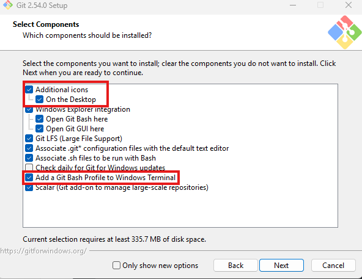
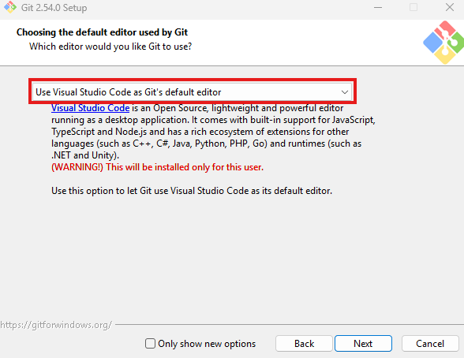
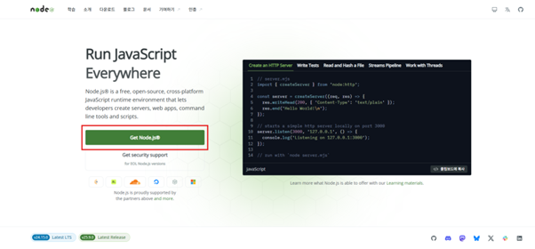
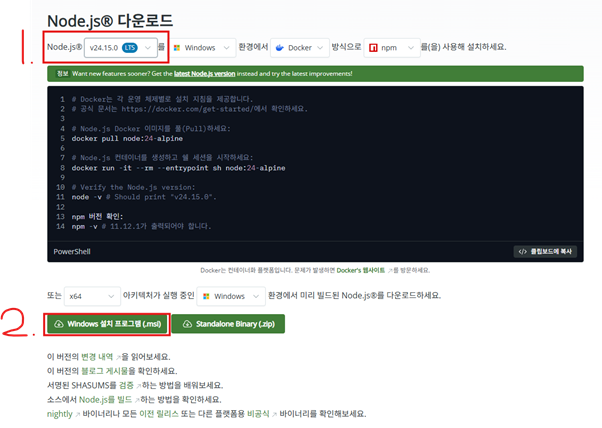
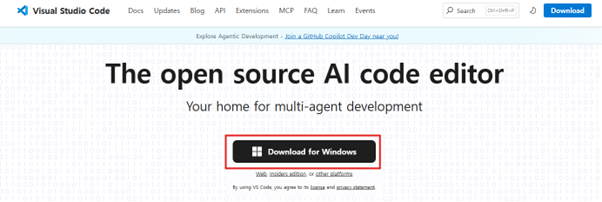
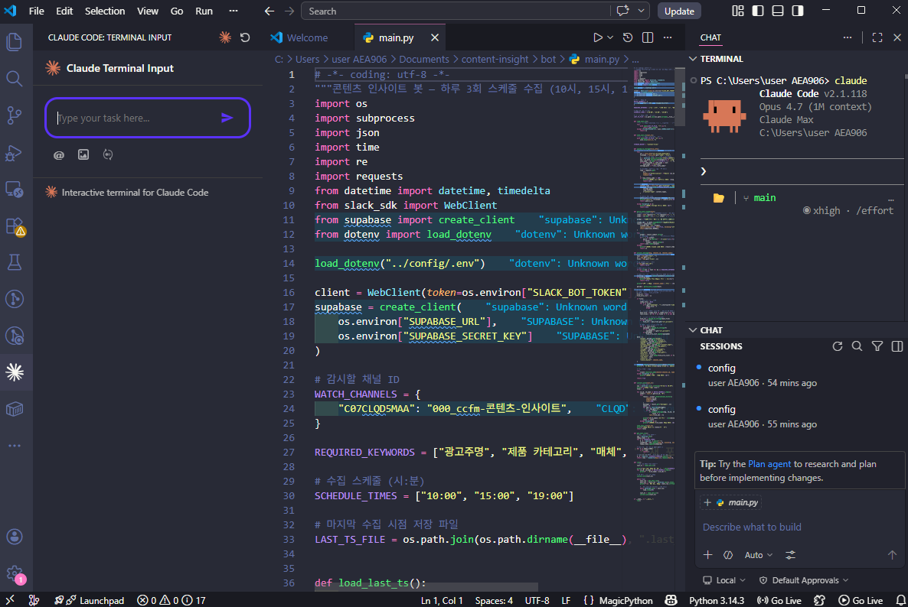
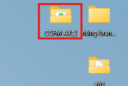
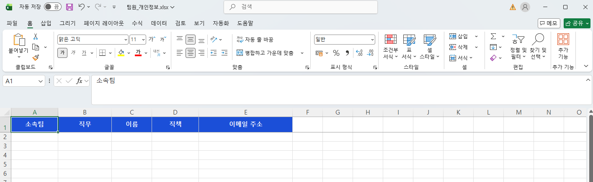

설치부터 기본 사용법까지 —
따라하면 완성되는 입문 가이드
설치부터 기본 조작까지 — 13개 챕터, 약 30~40분 소요
비개발자를 위한 Windows Native CLI 환경 구축 + 기본 조작 숙지까지.
필수·권장 도구 설치 → Claude Code 설치·로그인 → 기본 대화·슬래시·단축키까지.
고급 워크플로우 · MCP 연동 · API 연동 · 프롬프트 테크닉 심화 — 후속 가이드.
30~40분. 대부분 각 도구 다운로드·설치 대기 시간. 인터넷 속도 따라 변동.
같은 Claude를 쓰지만 인터페이스와 작업 방식이 다릅니다.
세 가지만 확인하세요. 도구 설치는 다음 장부터.
필수 먼저, 권장 그 다음, 선택은 마지막. 순서대로 진행하면 충돌 없습니다.
Claude Code가 내부적으로 Git Bash 호출. 없으면 실행 안 됨.
본체. PowerShell 한 줄 설치. npm 방식 아님.
Claude Code 자체엔 비필수. 향후 MCP 연동·AI 도구에 사용.
Claude가 수정한 파일 확인·편집. 내장 터미널도 편리.
Claude를 GUI 앱으로 사용 가능. Claude Code도 데스크톱 앱 안에서 실행 가능(터미널이 어려운 분에게).
Claude Code 실행에 필요한 기본 환경을 만들어줍니다.
gitforwindows.org → "Download" → 64-bit Installer.


PowerShell에 한 줄 붙여넣기.
예전엔 별도 프로그램을 먼저 설치해야 했지만, 지금은 한 번에 설치돼요.
irm 설치 명령어가 PowerShell 전용이라 다른 터미널에서 입력하면 오류가 나요.
설치 후 별도로 업데이트하지 않아도 최신 버전이 유지돼요.
향후 MCP 연동·AI 도구 사용을 위해 미리 깔아두면 편합니다.
nodejs.org → 초록색 "Get Node.js®" 버튼 클릭.
상단 드롭다운에 v24.15.0 LTS 선택돼 있는지 확인 (안정 버전).
초록색 "Windows 설치 프로그램(.msi)" 버튼 클릭 → 다운로드 후 실행 → 기본 옵션 Next → Install.


Claude가 수정한 파일을 바로 확인·편집. VS Code 안에서 claude 실행도 가능.
검정색 "Download for Windows" 버튼 클릭 → 설치 파일 받기.
받은 .exe 실행 → 라이선스 동의 → 기본 옵션 Next → Install.
VS Code 실행 → Extensions (Ctrl+Shift+X) → "Claude Code" 검색 → Install. 에디터 안에서 Claude 바로 호출 가능.


Ctrl + ` 로 터미널 열고 claude 실행.
여기까지 성공하면 CLI 환경 구축 완료. 다음 장부터 기본 조작.
PowerShell에서 claude. 환영 화면 확인.
기본 브라우저가 자동으로 Anthropic OAuth 페이지를 엽니다. 로그인 + 권한 승인.
Windows Credential Manager에 저장 → 이후 자동 로그인.
claude 대화창 안이 아닌, 종료 후 PowerShell 창에서 실행. 환경 점검 리포트가 나옵니다.
개발 언어 몰라도 돼요. 한국어 문장 하나로 폴더·파일이 실제로 만들어집니다.


외울 필요 없어요. 막힐 때 꺼내 보세요.
claude …claude 실행 전·후, PowerShell 창에서 사용.
claude — 대화 시작claude -c — 직전 세션 이어가기claude --resume — 이전 세션 목록에서 선택claude doctor — 환경 점검 리포트claude update — 최신 버전 업데이트claude --version — 버전 확인claude -h — 도움말 전체/ 명령어/ 입력하면 전체 목록이 자동 표시.
/help — 명령 목록/login — 로그인/clear — 대화 초기화/compact — 요약·토큰 절감/init — CLAUDE.md 생성/memory — 규칙 편집/model — 모델 전환/status — 상태 확인/permissions — 권한 관리/config — 설정/cost — 사용량·비용/exit — 종료모두 claude 대화창 안에서 쓰는 단축키. ? 입력하면 전체 목록.
CLI 환경 설정 → Claude Code 로그인 → 기본 조작까지. 여기까지 따라왔다면 준비 끝!